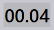

Widok zadania
Ta sekcja wyjaśnia różne widoki dostępne w widoku zadania, w tym Zadania, Części, Zagnieżdżenia, Edycję, Symulację i Eksport.
Zadania
Wybranie opcji zadania wyświetla listę wszystkich zadań, które są obecnie skonfigurowane w oprogramowaniu. Możesz dwukrotnie kliknąć zadanie, aby zobaczyć szczegóły lub kliknąć prawym przyciskiem myszy, aby uzyskać dostęp do dodatkowych opcji.
-
Zadania są wyświetlane w widoku kafelków, gdzie każde zadanie jest wyświetlane z podstawowymi właściwościami takimi jak ID zadania, odniesienie zadania, nazwa klienta, całkowite części, data dostawy, pasek stanu zadania itp.
-
Każdy kafelek zadania pokazuje również obrazy części w formacie ułożonych kart. Możesz przewijać wszystkie części w zadaniu za pomocą kółka myszy.

Szczegóły zadania
-
Dwukrotne kliknięcie kafelka lub naciśnięcie klawisza Enter po wybraniu kafelka przełącza widok do trybu szczegółów.
-
Strona szczegółów pokazuje listę części wraz z zagnieżdżonymi arkuszami (układami), jeśli są obecne.
-
Użyj klawiszy strzałek w górę/w dół, aby przełączać się między zadaniami na stronie szczegółów.
-
Przewijanie kółkiem myszy nad stosem części podkreśla część zarówno na liście części, jak i na układach.
-
Wybranie układu podkreśla układ i wszystkie części zagnieżdżone na nim na liście części. Podkreślenia są automatycznie wyłączane po minucie.

-
Podsumowanie ułożenia:
-
Detale: Pokazuje całkowitą liczbę pozycji zamówienia i całkowitą ilość w zadaniu.
-
arkusze: Pokazuje całkowitą liczbę zagnieżdżonych arkuszy wraz z całkowitą ilością arkuszy.
-
-
Czynności:
-
Gięcie: Pokazuje przypiszaną maszynę i ilość zamówienia, która ma być przetworzona.
-
Cięcie: Pokazuje przypiszaną maszynę i ilość zamówienia, która ma być przetworzona.
-
Priorytet
-
Najpierw kliknij ikonę Jobs po lewej stronie ekranu, wybierz zadanie, które chcesz edytować, a następnie kliknij edit po prawej stronie ekranu (upewnij się, że wybrana jest opcja Jobs).
-
Alternatywnie możesz kliknąć prawym przyciskiem myszy na wybrane zadanie i kliknąć ikonę Wyrejestruj dokument do edycji.
-
Po kliknięciu edit pojawia się okno edycji zadania. W tym oknie możesz ustawić lub zmienić priorytet dla zadania.

-
Na podstawie priorytetu części zadania, odniesienie do zadania na kafelku zadania jest odpowiednio kolorowane.
-
Części zadania są najpierw sortowane według priorytetu, a następnie według daty dostawy. Są również kolorowane zgodnie z ich priorytetem.
-
Podczas zagnieżdżania części Urgent są brane pod uwagę jako pierwsze, następnie High, potem Normal, a na końcu części o priorytecie Low są umieszczane w pozostałej przestrzeni na arkuszach zagnieżdżenia.
-
Arkusze zagnieżdżenia są również sortowane i kolorowane zgodnie z priorytetem.
| Priorytet zadania | Opis koloru |
|---|---|
|
Pilne |
|
Normalne |
|
Wysoki |
 |
Niski |


Status
-
Pasek stanu zadania używa kodów kolorystycznych do wskazania postępu lub stanu zadania na podstawie przetworzonej lub pozostałej ilości.
-
Części w ramach zadania i arkusze zagnieżdżenia są również oznaczane odpowiednimi kolorami, aby odzwierciedlić ich indywidualny status w ramach całego ZADANIA.
-
Kodowanie kolorystyczne poprawia śledzenie i zapewnia, że operatorzy mogą łatwo zobaczyć status produkcji na pierwszy rzut oka.


| Status zadania | Opis |
|---|---|
|
Nie gotowe |
|
Układanie |
|
Gotowe |
|
Bend Planned |
|
Brakuje arkuszy blachy |
|
Kolejka gięcia |
|
Kolejka cięcia |
|
Wykonano |


Części
Widok Aktywne części pokazuje wszystkie części, które są obecnie w trakcie realizacji w ramach aktywnych zadań.
Każda część jest wyświetlana jako kafelek z kluczowymi szczegółami, takimi jak nazwa części, wymiary, materiał, grubość, ilość i data dostawy. Wyświetlany jest również podgląd wizualny części.
Ten widok pomaga użytkownikom monitorować status przetwarzania poszczególnych części i śledzić ich postęp w ramach trwających zadań.

Zagnieżdżenia
Widok Aktywne zagnieżdżenia pokazuje wszystkie zagnieżdżenia, które są obecnie w trakcie realizacji w ramach aktywnych zadań.
Każde zagnieżdżenie jest wyświetlane z istotnymi szczegółami, takimi jak liczba części i status przetwarzania. Wyświetlany jest również wizualny układ zagnieżdżonych części.
Ten widok pomaga użytkownikom monitorować postęp zagnieżdżania i śledzić, jak części są rozmieszczone i przetwarzane na arkuszach.

Edytuj
Opcja Edytuj umożliwia zmianę wybranego elementu.
W zależności od bieżącego widoku wybrana instancja jest otwierana do edycji:
-
W widoku Zadania wybrane zadanie jest otwierane do edycji.
-
W widoku Aktywne części wybrana część jest otwierana do edycji.
-
W widoku Aktywne zagnieżdżenia wybrane zagnieżdżenie jest otwierane do edycji.

Eksportuj csv
Opcja Eksportuj umożliwia wybranie i eksport informacji o zadaniu do pliku CSV.
-
Kliknij ikonę jobs.
-
Kliknij opcję export po prawej stronie ekranu.

-
Pojawia się okno dialogowe z dostępnymi polami:

-
Zaznacz pola wyboru dla pól, które chcesz wyeksportować.
-
Użyj opcji Group By, jeśli chcesz zgrupować dane według wybranego pola.
-
Kliknij Eksportuj, aby wygenerować plik CSV.
Informacje dodatkowe
Są również trzy dodatkowe ikony po prawej stronie ekranu, a mianowicie symuluj, Goto i powrót.
-
Simulate otwiera wybrany element dla bardziej szczegółowego widoku.
-
Goto przełącza fokus i pokazuje część lub zagnieżdżenie, które zostało wybrane.
-
Back wraca o jeden poziom wstecz od miejsca, w którym się obecnie znajdujesz, na przykład przez kliknięcie powrót podczas symulacji wracasz do głównego zadania, a z zadania wracasz do głównego widoku zadań.